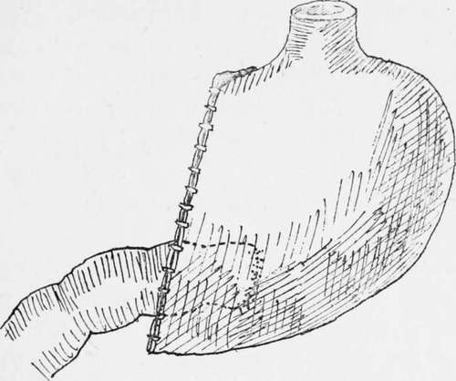
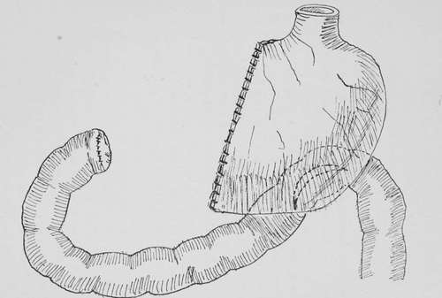

Partial Gastrectomy Of The Pyloric End Of The Stomach. Part 2
Description
This section is from the book "Cancer Of The Stomach", by A. W. Mayo Robson, D.Sc, F.R.C.S.. Also available from Amazon: Cancer of the Stomach.
Partial Gastrectomy Of The Pyloric End Of The Stomach. Part 2
The method is as follows : While the clamps are still in position a long chromic catgut suture is passed through all the coats of the cut stomach wall, beginning at the upper end. This is carried down until a point is reached (b) which will leave the stomach opening of a size to correspond with that of the duodenum. At this stage the suture is passed beneath the last loop so as to prevent it slipping, and the needle is then temporarily laid aside, still threaded. The sutured edges are now inverted, and a serous suture, which only transfixes the serous and muscular coat, is then inserted, commencing at the point A and drawing together the serous surface as far as the place where the marginal suture was laid aside. The open ends of the two viscera are then placed in apposition and the serous suture is continued around the posterior half circle, uniting the peritoneal coats of the duodenum and stomach about a quarter of an inch from the margins of the opening that is to be permanent between the stomach and bowel. The needle is then laid aside, still threaded, and the marginal catgut suture previously laid aside is now taken up and continued around the posterior part of the opening through all the coats of the two viscera, so as to make the mucous membranes continuous, and at the same time to act as a haemostatic suture. After this has been carried around the posterior half circle, if the bobbin is employed it is now placed in position ; but whether the bobbin is inserted or not, the mucous suture is continued round, taking up all the coats on the anterior part of the the circle until it reaches the point b, where it is secured by a knot and cut short. The serous suture is now taken up and continued round to the same place, taking up the serous coats of the duodenum and stomach, when it is also knotted off and cut short. At the angle between the vertical and circular part of the suture there should be no point of danger, and no tension if the stitching has been well done, but if there is any doubt it may be advisable to insert two or three separate serous sutures of Pagenstecher's thread in order to strengthen this point, which has been termed the angle of danger.
(2) Kocjier's Method
Professor Kocher, wliose method has been carried out most successfully, not only by himself, but also by many other surgeons, closes the cut end of the stomach by means of a continuous catgut marginal suture, taking up the whole thickness of the cut surfaces, including the mucous membrane, after which the united edges are invagi-nated and closed in by a silk or Pagenstecher's thread for the serous surfaces. The open end of the duodenum is then applied to a new opening made in the posterior surface of the stomach, to which it is united. This part of the operation may be accomplished either by simple continuous sutures or by sutures around a decalcified bone bobbin. The junction by suture or by suture around a decalcified bone bobbin differs in no way from the method described under gastroenterostomy, except that in this case the open end of the duodenum is applied to an incision in the back of the stomach, whereas in as ordinary gastroenterostomy the openings are both into the sides of the viscera to be joined.
Fig. 8.-Partial gastrectomy ; Koclier's method, end-to-side junction.
In some cases it may be found easier to make the anastomosis through the front of the portion of stomach remaining instead of through the posterior wall, and in the cases on which I have made the junction by applying the open end of the duodenum to the anterior gastric wall the results have been equally good.
(3) The Third Method
In it the open end of the duodenum and the open end of the stomach are closed by sutures, and a loop of jejunum is united to the lower end of the cavity in the stomach. It may be performed either by the anterior or posterior method, and in no way differs from the ordinary operation of gastrojejunostomy. This operation may be performed with advantage in two stages where the patient is not in a very good condition and unable to bear the complete procedure. In such cases the gastrojejunostomy is first performed, the bowel being united to the lower border of the cardiac end of the stomach. From two to four weeks later, when the patient has gained more strength, the second or radical operation is performed, the disease being completely and widely excised, and both cut ends being closed by sutures.
Fig. 9.-Partial gastrectomy; closure of both cut ends and side-to-side junction of the viscera.
The following case serves as an illustration of the method performed in two stages, a procedure only to be recommended when the patient is too feeble to bear the complete operation. The patient, a man aged sixty-three years, had suffered from stomach symptoms for a year, a tumour having been noticed for a month. Gastroenterostomy was performed on November 15th, 1900. A central ring of cancer was found dividing the stomach into two cavities. The patient was too ill to bear gastrectomy. A good recovery was made, with a rapid gain in weight and strength, so that on December 20th the complete removal of the growth by gastrectomy was well borne. The patient lived for sixteen months and enjoyed life. He took his food well up to within a short time of the end.
Much has been written as to which is the best method of uniting the small intestine to the remains of the stomach in partial gastrectomy. My own feeling is that each case must be a law unto itself, for I have tried all the three methods-end-to-end, end-to-side, and side-to-side-and I believe that each can be done with equally good results in suitable cases. I feel sure that the end-to-end method can be more safely accomplished by suture over the decalcified bone bobbin than by suture alone, but I think that as a rule the end-to-side method known as Kocher's operation will he found the most generally useful, and in Professor Kocher's hands, as well as in the hands of other surgeons, the union of the divided end of the duodenum to a new opening in the posterior or anterior wall of the stomach, when a sufficient amount of duodenum is available, will be found to be the best of all procedures.
Continue to:
- prev: Partial Gastrectomy Of The Pyloric End Of The Stomach
- Table of Contents
- next: Partial Gastrectomy Of The Pyloric End Of The Stomach. Part 3
Tags
stomach, operation, cancer, tumour, ulcer, gastric, gastrectomy